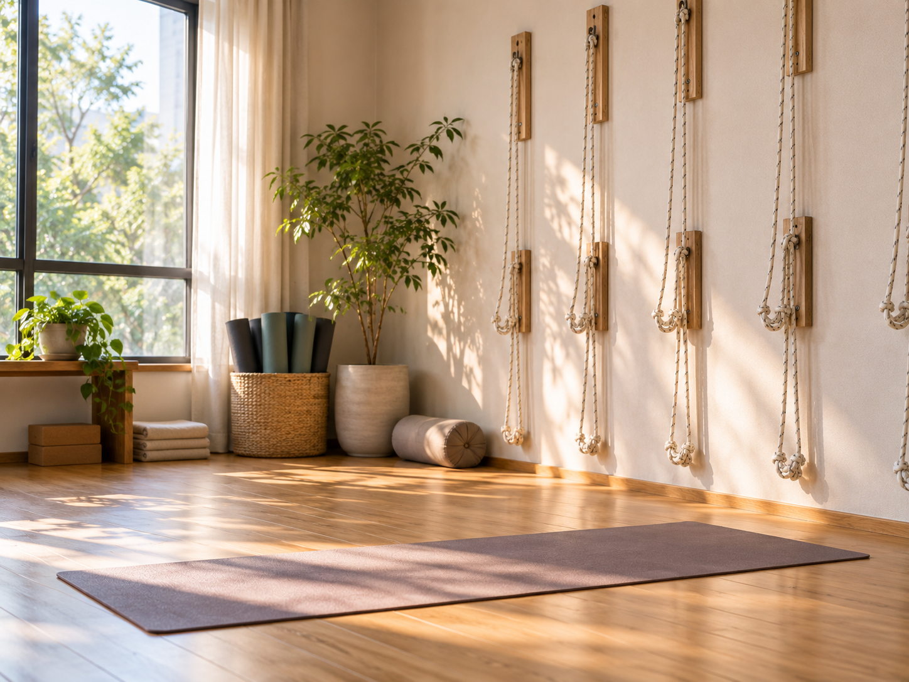

早上練還是晚上練比較好？從椎間盤含水量、筋膜黏彈性與生活節奏全面解析

- 清晨的脊柱物理力學：經過整夜平躺，椎間盤滲透吸水飽和，內部靜水壓最高，剛起床 1 小時內盲目強烈前彎折疊，椎間盤剪切拉力暴增 300%。晨練應著重軸向延伸與神經喚醒。
- 傍晚的筋膜生理優勢：核心體溫在下午 4 至 7 點達到高峰，關節滑液黏滯度下降，結締組織黏彈性延展度提升 20%，但需警惕大腦疲勞造成的本體感覺控制力下滑。
- 自律神經調節分工：晨間溫和微動可啟動皮質醇醒覺反應（CAR），提振精神；晚間低負載壁繩卸載與長吐氣可刺激迷走神經，促進褪黑激素釋放與深層睡眠。
- 關節病變紅旗：若晨間關節僵硬持續超過 1 小時以上，或伴隨靜止痛與紅腫，必須立即就醫排查僵直性脊椎炎或自體免疫風濕疾病。
剛下定決心開始練習瑜珈時，每個人都會面臨同一個排課難題：「到底該選早上的班，還是晚上的班？」晨型支持者強調早起練習能排毒提神，夜間支持者則認為忙碌一整天後放鬆肩頸才最舒暢。在運動科學與生物力學視角下，人體在早晨與傍晚並非同一副機器：脊椎椎間盤的含水量、結締組織的黏彈性，以及自律神經與荷爾蒙的節律，都在早晚呈現顯著差異。讀懂這些生理密碼，才能為自己做出最聰明、不傷身的抉擇。
晨間力學禁忌：清晨起床前 1 小時，椎間盤最脆弱
許多人在早晨醒來時，都會感到背部僵硬、手指微脹，甚至彎腰刷牙都覺得下背發緊。這不是你的身體特別老化，而是人體脊椎的自然生物流體力學現象：
- 椎間盤吸水膨脹（Imbibition）：日間直立時，重力會將椎間盤內的水分緩緩擠出；夜間平躺睡眠 6 到 8 小時期間，軸向重力消失，髓核內的親水性蛋白聚糖（Proteoglycans）會從周邊微血管重新吸收大量組織液，使 23 個椎間盤含水量達到每日巔峰，脊柱長度甚至會比傍晚暫時增加 1 至 2 公分。
- 纖維環張力極限與前彎風險：著名脊柱力學專家 Adams 與 Hutton 的經典研究證實，清晨剛起床時，椎間盤內部靜水壓極高，包裹髓核的纖維環處於緊繃飽滿狀態，脊柱整體抗彎剛性增加。若在起床後第一小時內強行進行深度前彎（如站姿前彎手碰地或大角度坐姿前屈），纖維環後側承受的剪切拉力比下午高出 300%，後縱韌帶承受的張力增加 80%。
- 晨練的安全法則：早晨絕非不能運動，而是嚴禁「剛離床就大力折疊腰部」。晨練應從站姿閉鎖鏈呼吸、微屈膝伸髖、胸椎開展與溫和的垂直軸向拔高（Axial Elongation）展開，給予脊椎 30 分鐘讓多餘水分隨動態自然均勻分散。
傍晚生理優勢：核心體溫高峰與筋膜黏彈性解鎖
相較於早晨的剛性緊繃，人體在下午 4 點至晚間 7 點之間，生理指標展現出截然不同的狀態：
- 核心體溫（Core Body Temperature）巔峰：受到晝夜節律下視丘調節，人體體溫在午後達到最高點。體溫每升高 1°C，肌肉與肌腱內部膠原纖維的黏彈性（Viscoelasticity）顯著提升，關節囊內的滑液黏滯係數降低，動作阻力大幅減小。
- 更容易達到的動作幅度：同一個髖關節開展或胸椎旋轉動作，在傍晚做起來往往覺得比早上輕鬆流暢，關節活動度（ROM）提升約 15% 至 20%。
- 晚間練習的隱形陷阱：晚間的「鬆」有時是雙面刃。在經歷整天 8 小時的腦力消耗與工作疲憊後，大腦感覺皮質的中樞神經徵召效率下滑，深層本體感覺受器（肌梭與高爾基腱器官）的警訊反饋較為遲鈍。若學員看見自己動作幅度變大而盲目死命硬拉，極易在不知不覺中拉傷關節囊與被動韌帶。
自律神經與睡眠節奏：早晚練習的情緒與神經分工
除了骨骼肌肉力學，早晚練習對大腦神經化學物質的調控截然不同：
晨練的神經效益：啟動交感神經與皮質醇節律
晨間進行微出汗、動態流動的體位法，能完美配合人體早晨的「皮質醇醒覺反應（CAR）」，促進正腎上腺素與多巴胺分泌，有效驅散大腦睡眠慣性（Sleep Inertia），提升日間專注力與工作效率。
晚練的神經效益：關閉交感放電、切換副交感修復
若白天下班時肩頸僵硬如石、腦袋思緒雜亂，晚間練習應嚴格避開高心率、高難度平衡或大量後彎（避免刺激腎上腺素，延遲褪黑激素分泌而失眠）。最佳的晚間安排是「修復性壁繩牽引」：透過壁繩 30% 至 70% 的自重懸掛卸載，讓整天受重力壓迫的腰椎垂直減壓，配合長吐氣刺激迷走神經，引導心率平緩、微血管舒張，為夜間深層睡眠打下完美基石。
無論早晚，找到專屬於您的身體發力節奏
晨間慢熱僵硬？晚間疲累代償？每位學員的自律神經狀態與關節力線皆不相同。鑫彥瑜珈提供專業 AI 體態檢測，現場精準測量您的體態弧度，由老師當面依您的生活型態量身推薦最理想的練習時段與強度。
預約首次 NT$299 AI 體態檢測（含時段與發力評估）關節自體免疫與心血管急症紅旗（Red Flags）
健康安全界線：早晚練習前若發現身體出現以下任何異常徵兆，非一般生理慢熱或工作疲勞，請立即就醫診斷：
1. 自體免疫晨僵（Morning Stiffness > 1 hr）：早晨起床時，下背、薦髂關節或雙手小關節僵硬卡死「持續超過 60 分鐘」，且「越靜態休息越痛，活動走動後反而舒服」（高度懷疑僵直性脊椎炎 AS、類風濕性關節炎 RA 或乾癬性關節炎，需抽血檢驗 HLA-B27、RF 與發炎指數）。
2. 晨間運動心絞痛（Angina Pectoris）：清晨開始活動或微幅用力時，突發胸骨後方壓榨性悶痛、氣喘心悸，疼痛延伸至左肩、左臂內側或下巴（清晨為心肌梗塞高發時段，必須立即停止練習並就醫）。
3. 夜間持續性骨骼劇痛：晚間躺平休息時，脊椎骨骼深處仍有劇烈搏動性抽痛，半夜因劇痛而醒來，且變換姿勢完全無效（需排除椎體感染或骨腫瘤）。
常見問題
早上起床身體總是特別僵硬，適合立刻做瑜珈伸展嗎？
剛起床時身體僵硬是正常的生理防護現象。人體在平躺睡眠數小時後，脊椎 23 個椎間盤會因滲透吸水而達到最高飽和度，內部靜水壓極高、纖維環張力飽滿，使得脊柱剛性激增。生物力學研究指出，起床後 1 小時內若進行強烈被動前彎，椎間盤承受的後向剪切拉力比平常高出 300%。因此晨間練習應避免強行彎腰折疊，而應以溫和的站姿軸向拔高與四肢小關節微動為先。
為什麼晚上練習時，許多動作感覺比早上更容易拉開？
這主要歸功於晝夜節律中的「核心體溫與筋膜黏彈性（Viscoelasticity）」。人體核心體溫通常在傍晚 4 點到 7 點達到每日巔峰，較高溫度能降低關節囊滑液的黏滯係數，並提升膠原蛋白與彈性蛋白的延展性。但需特別注意：傍晚的「柔軟感」有時伴隨著神經中樞的日間疲勞，若盲目追求大動作幅度，反容易因本體感覺控制力下滑而產生過度伸展拉傷。
晚上練習瑜珈會不會刺激交感神經，導致深夜失眠難以入睡？
這完全取決於練習的「神經生理代謝強度」。若在睡前 2 小時內進行高心率流瑜珈、強烈後彎或核心跳躍，會刺激腎上腺皮質醇分泌與交感神經放電，延遲褪黑激素合成；反之，若安排壁繩卸載牽引、抱枕支撐修復體式，並搭配 4 秒吸、8 秒慢吐氣的橫膈膜長呼吸，能強力刺激副交感迷走神經，促進血管舒張，反而具有極佳的助眠深層放鬆效果。
早晚練習時段到底該怎麼選擇？固定時段還是彈性調整好？
從長期運動神經適應的角度來看，「能穩定維持的時段就是最完美的時段」。若早晨行程相對穩定不受干擾，晨練能有效喚醒自律神經與深層姿勢肌；若白天工作繁忙、肩頸負載極重，晚間練習則能及時重置骨盆腰椎力線。固定時段有助於大腦建立荷爾蒙分泌慣性，但彈性預約也遠勝於因行程衝突而完全中斷練習。
早晨起床若出現哪些異常僵硬症狀，必須提高警覺就醫排查？
若早晨起床時的背部或周邊關節僵硬「持續超過 1 小時以上」，且稍微活動後反而緩解、越休息反而越痛（高度懷疑僵直性脊椎炎 AS 或類風濕性關節炎 RA 等自體免疫疾病）；或是晨起活動時出現突發性胸口壓榨感悶痛、延伸至左肩下巴（心肌缺血心絞痛），必須立即就醫排查，切勿當作單純筋骨慢熱而硬練。